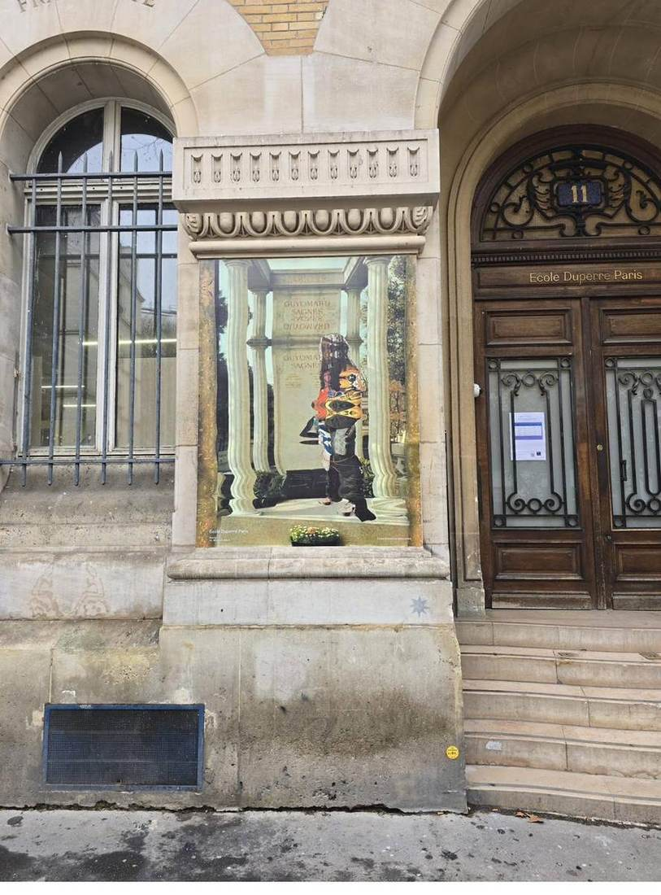

École Duperré, Paris 3e — habillage décoratif des vitrines.
Rue Dupetit-Thouars, Paris 3e arrondissement. Pose de film décoratif imprimé sur les vitrines de la façade haussmannienne de l'École nationale supérieure des arts appliqués Duperré.

École Duperré — 11 rue Dupetit-Thouars, Paris 3e · film décoratif imprimé Angle nord de la façade — rue Dupetit-Thouars, Paris 3e
Angle nord de la façade — rue Dupetit-Thouars, Paris 3e
Le projet
L'École nationale supérieure des arts appliqués et des métiers d'art Duperré (Paris 3e) souhaitait valoriser ses vitrines de façade avec un habillage décoratif en film imprimé haute définition. L'objectif : afficher les travaux d'élèves sur la rue Dupetit-Thouars, au cœur du Marais, tout en préservant la cohérence architecturale du bâtiment haussmannien.
Quatre vitrines traitées, chacune avec un visuel différent issu de projets d'élèves — du photomontage numérique à la photographie de mode, en passant par la création textile.
La contrainte architecturale
Le bâtiment est situé dans une zone patrimoniale du Marais (Paris 3e). La pose a nécessité une attention particulière : film uniquement en face intérieure pour préserver la pierre de taille, adhérence sans colle permanente (remplacement prévu à chaque nouvelle exposition), découpe millimétrée pour respecter les moulures.
La réalisation
 Détail — plaque de rue visible, Paris 3e
Détail — plaque de rue visible, Paris 3e
 Façade complète — vue depuis la rue Dupetit-Thouars
Façade complète — vue depuis la rue Dupetit-Thouars
Quatre vitrines habillées en une journée d'intervention. Film repositionnable pour permettre les changements saisonniers en autonomie par l'équipe de l'école. Résultat net, sans débordement sur les moulures, lisible depuis l'extérieur même par temps couvert.
Ce que ce chantier démontre
La pose de film décoratif sur des bâtiments publics patrimoniaux requiert une maîtrise technique que tous les poseurs ne possèdent pas. DFP France intervient régulièrement sur des façades classées en Île-de-France — notre expérience sur ce type de contraintes est directement applicable à vos projets d'habillage de vitrines, d'opacification partielle ou de marquage discret.
Projet d'habillage décoratif ?
Vitrine, façade ou espace public — parlons-en.
Film décoratif imprimé, film dépoli, film teinté. Nous étudions votre projet et vous remettons un devis gratuit sous 48 h.